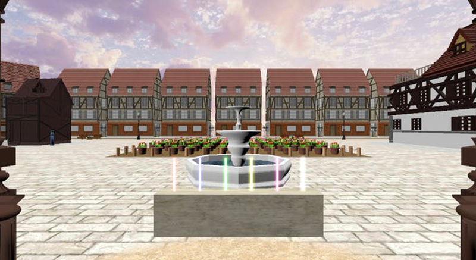
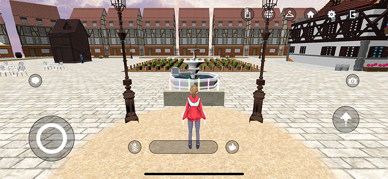
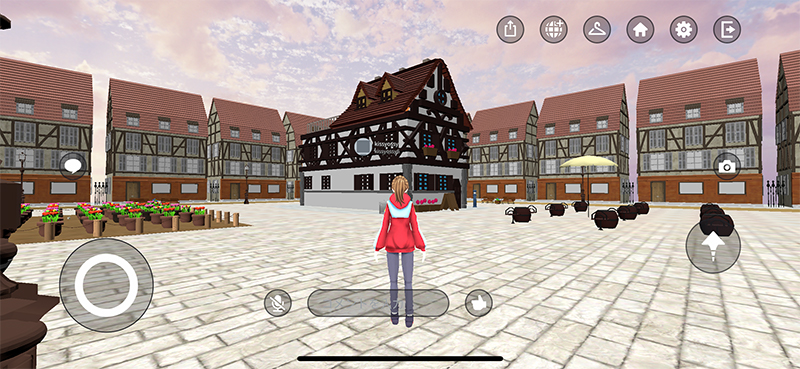
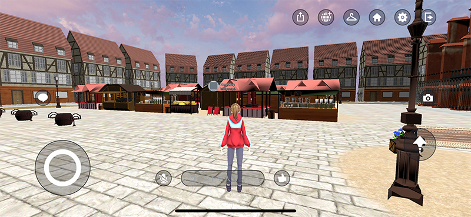
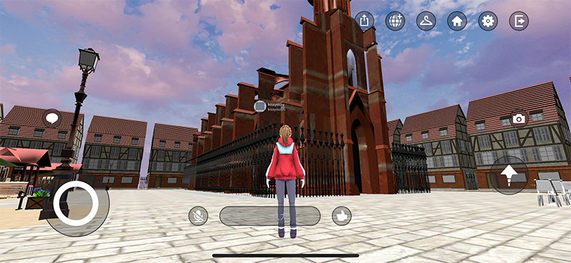

いがらしうぉーく

フラインブルクとアニメ「ご注文はうさぎですか？」をモチーフにしたオープンワールドの散歩アプリ。研究室のグループで制作した作品。
研究室の活動で制作したモデルをUnityの世界に並べ他作品である。
Clusterという誰でも手軽にバーチャルルームを作ることのできるサービスを用いた。

管理ページ画像
ワールドに入った直後にあるサイリウムと、ワールドのどこかにあるキャンドルは掴めるようになっている。キャンドルは3つある。

ワールド風景(広場)

ワールド風景(ラビットハウス)

ワールド風景(市場)

ワールド風景(城)
担当
Unityでのワールド作成全般。Clusterでのオープンワールド実装。モデルの細かい調整。
ちょっとひとこと
これからも少しずつ改良していく予定。
Copyright © by Kissyossy 2021